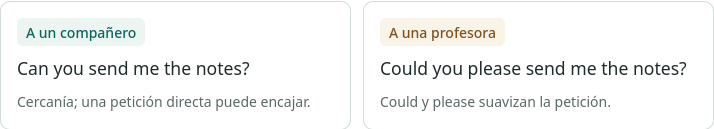
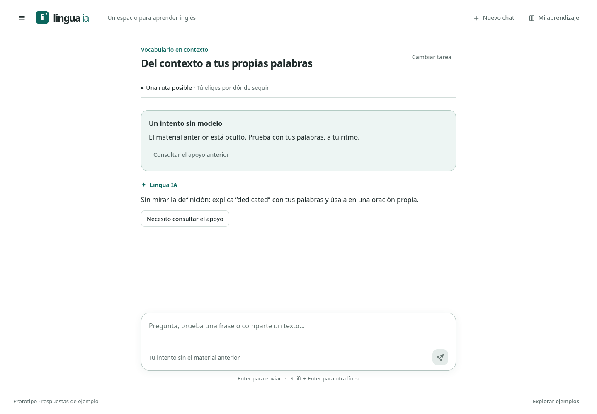
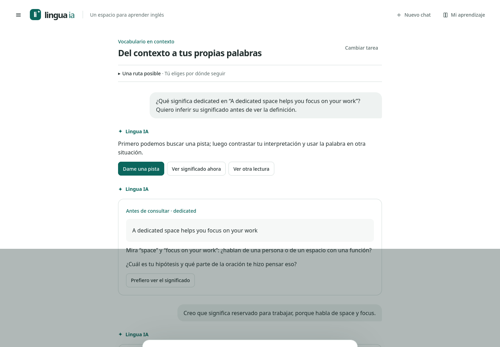

C1.1 · Evitar la ambigüedad
Matriz original: Cumple · Aplicado
Acciones con resultado explícito: Añadir a mi mensaje, Conservar mi frase y Recuperar una versión.
Localización: [data-action="use-prompt"]
La guía conserva los 71 principios y sus nombres de la matriz original. La columna de origen mantiene su clasificación binaria (44 cumplen y 27 no cumplen). El estado actual se revisa contra el prototipo conversacional: aplicado significa una decisión de diseño inspeccionable, no aprobación docente ni validación experimental. Parcial, pendiente, excluido y no aplica explican límites distintos; ninguno se cuenta como cumplimiento total.
Los originales anteriores al rediseño se conservan en docs/originales/principios-anterior/. El PDF y DOCX de la matriz de entrada permanecen intactos. Las capturas actuales se generan con tools/generate_screenshots.py; los recorridos completos están en guia.md y la correspondencia con el HTA en docs/REVISION_HTA_Y_TRAZABILIDAD.md.
| Estado | Cantidad |
|---|---|
| Aplicado | 49 |
| Excluido | 2 |
| Pendiente | 3 |
| Parcial | 6 |
| No aplica | 11 |
Se mantienen los 44 aplicados de la matriz original, con evidencia nueva. No se afirma validación experimental.
Matriz original: Cumple · Aplicado
Acciones con resultado explícito: Añadir a mi mensaje, Conservar mi frase y Recuperar una versión.
Localización: [data-action="use-prompt"]
Matriz original: Cumple · Aplicado
El compositor y las acciones de cabecera conservan estilo y función entre correo y vocabulario.
Localización: .app-header
Matriz original: Cumple · Aplicado
Se comienza con una intención libre y la ayuda se deriva de destinatario, contexto y propósito de aprendizaje.
Localización: #prompt-assist
Matriz original: Cumple · Aplicado
Cada revisión agrupa fragmento, propuesta, motivo y decisión; la consulta léxica conserva su oración.
Localización: .correction-card
Matriz original: Cumple · Aplicado
Botones, tarjetas y estados equivalentes reutilizan componentes y estilos.
Localización: .card
Matriz original: Cumple · Aplicado
Lectura, comparación y acciones comparten ejes; la ruta mantiene el orden de las sugerencias.
Localización: #stagebar
Matriz original: Cumple · Aplicado
Iconos lineales simples acompañan etiquetas; el envío tiene un nombre accesible.
Localización: #send-btn
Matriz original: Cumple · Aplicado
Columna central y comparaciones de igual peso; en móvil las alternativas se apilan sin perder su asociación.
Localización: .comparison
Matriz original: Cumple · Aplicado
Los paneles solicitados se abren en dialog con fondo separado, foco modal y cierre.
Localización: #workspace-dialog
Matriz original: No cumple · Excluido
No hay contenido en movimiento que deba agruparse. Se evita añadir animación sin una función de aprendizaje.
Localización: body
Matriz original: No cumple · Pendiente
La agrupación se ha inspeccionado en capturas; faltan revisión por dos personas y pruebas de percepción con usuarios.
Localización: .comparison
Matriz original: Cumple · Aplicado
Explicaciones breves; detalles de reglas y ejemplos se revelan bajo demanda.
Localización: .rule
Matriz original: Cumple · Aplicado
La intención precede a los mensajes; las propuestas y acciones se distinguen por tamaño, espacio y contraste.
Localización: .conversation-heading
Matriz original: No cumple · Parcial
Hay encabezados semánticos h1/h2/h3, labels, dialog y log. Falta comprobar toda la interacción con un lector de pantalla real.
Localización: #chat-title
Matriz original: Cumple · Aplicado
Correo, vocabulario y chats por explorar se agrupan por tarea; las palabras permanecen junto al contexto.
Localización: .history-group
Matriz original: Cumple · Aplicado
Las métricas separan aportes y palabras. Las revisiones se dividen en antes, propuesta, motivo y decisión.
Localización: .metrics
Matriz original: No cumple · No aplica
No se piden identificadores, teléfonos ni fechas compuestas. Fragmentar el mensaje libre volvería a introducir el formulario que se quiere evitar.
Localización: #chat-input
Matriz original: Cumple · Aplicado
Texto libre para producir y razonar; botones para aceptar, conservar, guardar o mostrar apoyos. No se convierte la tarea en una ficha.
Localización: #chat-input
Matriz original: Cumple · Aplicado
Tu frase, Propuesta y la categoría se encuentran junto a sus valores, también en la comparación léxica.
Localización: .diff-line
Matriz original: No cumple · No aplica
No existe una página de resultados de búsqueda. Las fichas preparadas no se presentan como resultados de una búsqueda.
Localización: .word-detail
Matriz original: Cumple · Aplicado
Gramática usa azul y Tono usa ocre, con nombres visibles. La decisión no depende del color.
Localización: .badge.grammar
Matriz original: No cumple · Aplicado
La revisión utiliza azul y ocre sobre fondos suaves, separados por espacio; no hay rojo y verde saturados yuxtapuestos.
Localización: .badge
Matriz original: Cumple · Aplicado
Texto oscuro sobre fondos suaves; el foco y el borde de la propuesta añaden diferencias de luminosidad.
Localización: .diff-line.proposal
Matriz original: Cumple · Aplicado
No se depende del par rojo/verde; categorías y estados se repiten en texto. No equivale a una validación con personas con daltonismo.
Localización: .badge.tone
Matriz original: Cumple · Aplicado
Categoría, antes/después, decisión y estado se expresan mediante rótulos, no solo color.
Localización: .badge
Matriz original: No cumple · Parcial
Foco visible de 3 px e iconos oscuros. No se declara una medición exhaustiva de contraste para todos los bordes y estados.
Localización: #send-btn
Matriz original: No cumple · Pendiente
Falta comprobar pantallas, brillo, reflejos y dispositivos reales del público objetivo. Las capturas de un navegador no sustituyen esa prueba.
Localización: body
Matriz original: Cumple · Aplicado
La sugerencia de consulta aparece junto al compositor y la explicación junto al fragmento que se revisa.
Localización: #prompt-assist
Matriz original: No cumple · No aplica
No hay errores de validación de formularios. El envío vacío se deshabilita y las limitaciones de revisión aparecen junto al texto.
Localización: #composer-notice
Matriz original: No cumple · Aplicado
La propuesta gramatical muestra un símbolo y el rótulo Gramática; la elección de tono usa su propia etiqueta. No se emplea rojo para señalar una preferencia estilística.
Localización: .badge.grammar
Matriz original: No cumple · Excluido
No existen avisos periféricos urgentes. Las sugerencias se sitúan junto a la escritura y pueden ignorarse.
Localización: #prompt-assist
Matriz original: No cumple · Aplicado
No se abren ventanas automáticas. Los paneles se solicitan expresamente; reglas y explicaciones se despliegan en el mismo contexto.
Localización: .rule
Matriz original: No cumple · No aplica
La práctica seleccionada es textual y no necesita sonidos de alerta ni audio.
Localización: #chat-messages
Matriz original: No cumple · No aplica
No hay parpadeos ni animaciones de aviso; no existe una duración de movimiento que limitar.
Localización: body
Matriz original: Cumple · Aplicado
Sin sonidos, ventanas automáticas ni avisos repetitivos; la confirmación permanece junto al mensaje.
Localización: #composer-notice
Matriz original: Cumple · Aplicado
Las categorías del historial mantienen el orden Correo, Vocabulario y Por explorar; las conversaciones conservan su orden de creación.
Localización: .history-group
Matriz original: Cumple · Aplicado
Iconos de documento, libro, nuevo chat y conversaciones mantienen siluetas diferentes, acompañadas de etiquetas o nombres accesibles.
Localización: .header-actions
Matriz original: No cumple · Aplicado
Cuerpo a 16 px y etiquetas regulares a 14 px. Metadatos breves pueden ser menores; se verificó ausencia de desbordamiento a 320, 390 y 1440 px. La comodidad lectora requiere usuarios.
Localización: body
Matriz original: Cumple · Aplicado
Las instrucciones usan español cotidiano y el inglés se reserva al material de aprendizaje.
Localización: .message-content
Matriz original: Cumple · Aplicado
Se usa una tipografía sans serif del sistema sin depender de descargas ni fuentes decorativas para la lectura.
Localización: body
Matriz original: Cumple · Aplicado
Títulos e instrucciones utilizan mayúsculas y minúsculas; no hay párrafos en mayúsculas sostenidas.
Localización: #welcome-title
Matriz original: Cumple · Aplicado
Los textos se leen sobre fondos sólidos; no hay imágenes ni patrones detrás de las explicaciones.
Localización: .reading-card
Matriz original: No cumple · Parcial
Se usa texto oscuro sobre fondos claros; falta una auditoría completa de todos los pares, estados, zoom y ajustes del usuario. No se afirma conformidad WCAG global.
Localización: body
Matriz original: Cumple · Aplicado
Mensajes, correos, lectura y explicaciones se alinean a la izquierda; solo se centran título inicial y metadatos breves.
Localización: .message-content
Matriz original: Cumple · Aplicado
Las tarjetas equivalentes comparten márgenes y las comparaciones mantienen alineación.
Localización: .comparison
Matriz original: Cumple · Aplicado
Títulos reales, rótulos, separación y detalles facilitan recorrer original, alternativa y razón.
Localización: .correction-card
Matriz original: Cumple · Aplicado
El inicio contiene una invitación, un compositor y dos ideas; la ruta y las explicaciones extensas se despliegan a petición.
Localización: #welcome
Matriz original: Cumple · Aplicado
No hay panel lateral permanente que repita texto o progreso; la información auxiliar se consulta cuando se necesita.
Localización: #learning-plan
Matriz original: No cumple · Pendiente
No se ha realizado una prueba de comprensión y lectura con estudiantes del público objetivo. Las pruebas automáticas no cubren este principio.
Localización: .reading-card
Matriz original: Cumple · Aplicado
Contexto, mensajes, borrador y versiones se conservan por conversación y se recuperan desde el historial local.
Localización: .session-link
Matriz original: No cumple · No aplica
No hay salida de voz; el contenido se comunica por texto al ritmo del estudiante.
Localización: #chat-messages
Matriz original: No cumple · No aplica
No hay interfaz de voz ni listas de opciones habladas.
Localización: #chat-input
Matriz original: No cumple · No aplica
No existe una interfaz de voz que deba acompañarse de salida visual.
Localización: #chat-messages
Matriz original: Cumple · Aplicado
La tarea aparece en el encabezado y junto al mensaje; Cambiar tarea permite corregir la ubicación. No hay cambios silenciosos entre actividades al escribir.
Localización: #task-label
Matriz original: No cumple · No aplica
No existe búsqueda externa ni una página de resultados. El mensaje original sí se conserva en el chat.
Localización: #chat-messages
Matriz original: Cumple · Aplicado
Enviar es la acción principal del compositor; cada propuesta distingue su opción de uso de las alternativas secundarias.
Localización: #send-btn
Matriz original: Cumple · Aplicado
Dos ideas de inicio y acceso directo al historial, ruta y notas; no hay un asistente secuencial obligatorio.
Localización: #starter-actions
Matriz original: No cumple · No aplica
La navegación es poco profunda: chat y panel solicitado. El encabezado identifica la actividad sin necesitar una ruta de carpetas.
Localización: #task-label
Matriz original: Cumple · Aplicado
Reglas, ejemplos y versiones siguen accesibles. La recuperación sin apoyo es una práctica explícita y voluntaria, con opción de consultar.
Localización: #recall-banner
Matriz original: No cumple · No aplica
El prototipo no administra cuentas, contraseñas ni recuperación de autenticación.
Localización: .app-header
Matriz original: Cumple · Aplicado
La intención, la lectura y la producción propia ocupan el centro. La ruta permanece plegada inicialmente.
Localización: #main
Matriz original: Cumple · Aplicado
Cambios aceptados o conservados muestran estado en su tarjeta y confirmación junto al compositor; las versiones anteriores no se borran.
Localización: #composer-notice
Matriz original: Cumple · Aplicado
La ruta diferencia ubicación, Aporte guardado y Por explorar. Abrir una etapa no registra una producción ni certifica dominio.
Localización: #stagebar
Matriz original: No cumple · Parcial
Se pueden guardar y retirar palabras del repaso. No se añaden colores personales ni reordenamiento de elementos; no es necesario para demostrar las dos tareas.
Localización: [data-action="save-word"]
Matriz original: Cumple · Aplicado
Las opciones nombran el resultado: Comparar dos peticiones, Ver significado ahora y Probar sin definición.
Localización: [data-action="definition"]
Matriz original: Cumple · Aplicado
Confirmaciones y decisiones usan verbos concretos, incluida la acción de deshacer o usar una versión.
Localización: [data-action="undo-correction"]
Matriz original: Cumple · Aplicado
Las rutas responden a comparar registro, inferir, contrastar, recuperar y transferir expresiones del HTA seleccionado.
Localización: #learning-plan
Matriz original: No cumple · Parcial
Hay confirmaciones, notas persistentes y reversión de decisiones y versiones. No existe deshacer global de mensajes o todas las acciones; no se declara cumplimiento total.
Localización: [data-action="undo-correction"]
Matriz original: No cumple · Aplicado
Se usan Enter para enviar, Shift+Enter para otra línea y Escape nativo para cerrar dialog. El compositor muestra los atajos familiares.
Localización: .composer-footnote
Matriz original: Cumple · Aplicado
El cierre es una acción explícita en Mi aprendizaje: resume actividad, permite descargar notas y dejar una duda para retomar. No declara una tarea dominada por navegar hasta el final.
Localización: [data-action="finish"]
Matriz original: No cumple · Parcial
La práctica sin modelo se indica de forma explícita y permite salir con Consultar el apoyo anterior. No expira por tiempo: una salida automática interrumpiría la recuperación al ritmo del estudiante.
Localización: #recall-banner







